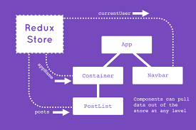
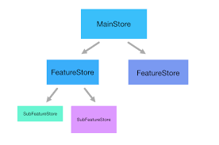
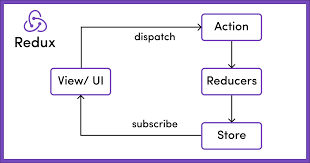
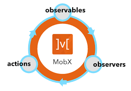
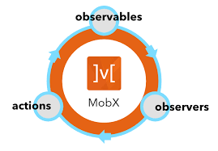

What is Redux?

- Redux has a single store, which provides a single source of truth
- The state in the store is immutable
- Actions invoke changes to the store
- Reducers update state
What is MobX?
- MobX can have multiple stores that store the state of an application
- Anything derived from the state without any further interaction is a derivation
- Actions are any piece of code that changes the state
- All derivations update automatically and atomically when the state changes
Redux and MobX learning curve
The popular opinion that developers have about Redux is that it is not easy to learn.
Also, there are a lot of things that are done behind the scenes in MobX,
creating a better learning experience for the developers.
MobX wins for its easier learning experience.
Why does Redux only have one store?

The state in the store is immutable,
which makes it easier for us to know where to find the data/state.
MobX multiple stores

You can logically separate stores so all of the application’s state is not in one store.
Subjective

Redux, updates must be tracked manually.
MobX uses observable data, which helps automatically track changes
MobX wins for automatically tracking updates.
Since the Redux store is pure, it is more predictable and easier to revert state updates.
In the case of MobX, if not done right, the state updates can make it harder to debug.
Boilerplate code winner
With its easy setup and learning curve, MobX’s boilerplate code takes the win. 
With its easy setup and learning curve, MobX’s boilerplate code takes the win. 
Redux comes in with its opinionated and pure nature to cinch the scalability win.
Redux performs better than MobX. But if you’re looking to get up to speed quickly and build simple apps with less boilerplate code,
MobX might be your best bet.